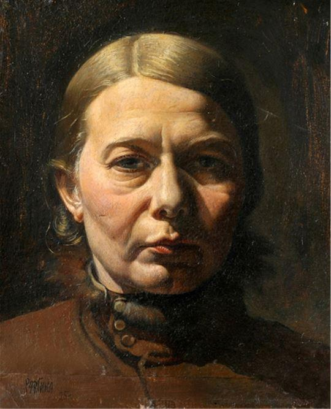
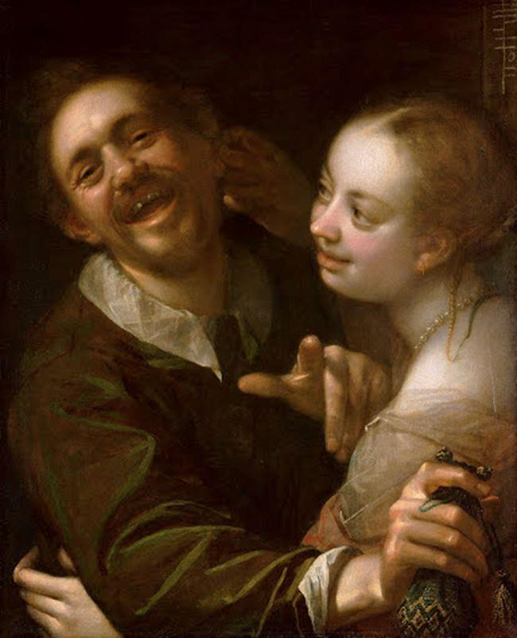
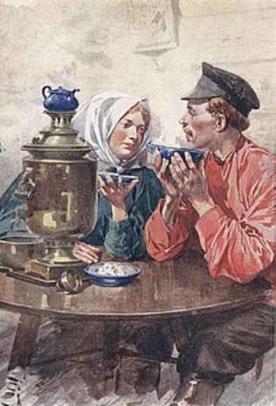

La pauvre femme n’était jamais debout ; elle était assise à son travail depuis la pointe du jour jusqu’à la nuit avancée. Excellente ouvrière de l’aiguille, elle fournissait tout le monde dans l’impasse. Elle cousait le linge pour les uns, des costumes pour les enfants, des parures pour les servantes.
Quand on aurait dû lui payer un rouble, on lui donnait vingt copecks.
— Et encore, on voulait bien lui donner. C’était par compassion.
Avec Olympe Ivanovna, on ne faisait jamais de conditions de prix. Ce qu’on lui donnait, elle le trouvait toujours bon.
— Voyons, elle voudrait discuter, quand c’est par compassion ! Elle essaya une fois de balbutier :
— C’est bien peu !
Tout le cul-de-sac en fut ébranlé.
— Donnez donc de l’ouvrage aux gens ! On les plaint, on leur donne du travail, et ça ne leur va pas. Ces gens-là ne sont jamais contents de rien.
Olympe renonça à marchander, craignant de passer pour ingrate, et de perdre des commandes.
Quand on donnait une commande à Olympe, on lui disait invariablement :
— Faites attention, petite mère, que votre mauvais sujet ne boive pas l’étoffe.
Cependant le mauvais sujet n’emportait jamais les commandes, non pas qu’il n’en voulût pas, il les aurait échangées volontiers contre de la vodka, mais c’est qu’Olympe tenait à la propriété d’autrui plus qu’à la prunelle de ses yeux. En allant se coucher, elle enfermait tout dans une malle, — une malle unique, — sur laquelle elle dormait ; elle la fermait à clef, passait la clef dans le cordon de sa croix autour de son cou, et avant de s’endormir, s’assurait toujours une dernière fois que la clef était bien là, à son cou.
Quand on réglait en petite monnaie le travail d’Olympe Ivanovna, on accompagnait invariablement la note d’une série d’observations :
— Voyons ! vous êtes une femme intelligente, et vous ne pouvez pas retenir votre mari ! C’est inconvenant ! Il n’y a pas moyen de vivre avec cet ivrogne. Par Dieu ! on finira par se plaindre à la police. Et alors, qu’est-ce que vous deviendrez ? La vie est encore bonne, pour vous, dans l’impasse. Par compassion pour vos enfants, on vous donne de l’ouvrage ici. Mais ailleurs, qu’est-ce que vous feriez ? Vous mourriez de faim avec vos enfants.
Et Olympe, fondant en larmes, était encore obligée de remercier de l’avis qu’on lui donnait.
Elle habitait un sous-sol, dans la maison Speciftzef, et payait pour une chambre et une cuisine sept roubles par mois. Auparavant on payait cinq roubles ce logement, mais le propriétaire avait augmenté Olympe Ivanovna :
— Permettez, ma petite mère, qui est-ce qui peut vous garder avec un pareil braillard ? Tous les jours ivre ! C’est par pitié pour vous que je le garde. Où iriez-vous avec vos enfants ? Voyez quels désagréments je suis forcé de subir. Ce n’est pas pour l’argent, car même pour dix roubles, on ne vous prendrait pas ! Votre mari est une plaie pour ma maison !
Et toute l’impasse était de cet avis :
— Grâce à Dieu, Speciftzef est encore un brave homme, il les garde.
Et Olympe, qui payait sept roubles pour un logement qui en avait toujours valu cinq, devait encore être reconnaissante de ce qu’on avait pitié d’elle.
Olympe Ivanovna n’avait pas quarante ans. Depuis quinze ans, elle vivait de son travail dans ce sous-sol, sans en sortir. Et malgré la pâleur de son visage exsangue, elle était encore jolie et attrayante. Ses traits fins et distingués paraissaient comme modelés par un artiste dans de la cire transparente. Sans jamais sourire, elle n’était que douceur et obéissance.
Elle avait été très jolie dans son enfance, Olympe Ivanovna, fille d’un petit fonctionnaire. On lui avait appris quelque chose, même un peu de français, une douzaine de mots. Quand il y avait du monde, on lui disait :
— Allons, petite, parle français. Alors elle disait :
— Mon père est bon, ma mère est bonne. Voulez-vous prendre la peine d’asseyer vous.
Cela faisait l’orgueil des parents, et la joie des personnes présentes.
Quand elle eut vingt ans, on la fiança à un brave homme.
Elle faisait alors un beau couple avec notre Miracle. Ils s’entendaient parfaitement. Lui, avait une voix de basse magnifique : il s’en servait de son mieux à Moscou, dans les chœurs de Tchoudovsky, l’église des Miracles, au Kremlin. On allait l’entendre.
Quand il chantait le solo du Gloria in excelsis Deo, au moment où il entonnait : Laudamus te, etc., il semblait que les voûtes allaient s’écrouler sous les éclats de sa voix de tonnerre.
Les marchands l’aimaient beaucoup. Il commença à leur être indispensable, sans sa femme, ce qui ne fut pas sans causer quelques larmes à Olympe.
Le Miracle était toujours en bonne compagnie. Les marchands lui offraient à boire, spécialement les jours de fête, en lui disant :
— Il faut bien boire un peu, pour chanter les vêpres comme il faut.
Peu à peu, peu à peu, ils gâtèrent le brave homme, qui commença à s’enivrer. On le renvoya des chœurs, des bonnes compagnies aussi. Il fréquenta les cabarets, et commença à trompeter les longues vies. Alors sa femme et lui commencèrent à habiter le souterrain.
Outre une fille, Olympe avait deux fils. L’aîné, Vanka, avait dix-sept ans. Dans l’impasse, on l’appelait Maigrillot. Personne ne le connaissait autrement.
— Voilà Maigrillot qui rentre. Encore des bleus à la tête !
C’était un nom de guerre. Ce sobriquet lui avait été donné par les flâneurs va-nu-pieds.
Maigrillot n’avait jamais rien étudié, sauf la grammaire que sa mère lui avait apprise.
Son père voulait s’en charger.
— Je m’occupe du vaurien. Je lui apprends le chant par parties. Il sera un ténor, vous verrez ça ! Il chantera ! On appelle son père un Miracle. Il ne sera pas moins qu’un Miracle. Je ne vous dis que ça.
Mais son manque de loisir fit qu’il ne réussit pas à le former. À seize ans, Vanka perdait au jeu avec des gamins l’argent de sa mère, et tout le monde en était indigné.
— Vaurien ! l’argent de sa mère. Et son père qui boit ! Personne pour le battre !
Et Vanka fréquenta les beaux diseurs, devint le Maigrillot, et rentra constamment avec la lèvre inférieure tuméfiée, ou un œil poché.
Quand il rentrait avec des meurtrissures plus graves, sa mère essayait de le sermonner :
— Il n’y a donc personne pour te faire honte ! C’est à faire rougir des pierres, de se conduire comme ça ! Mais qu’est-ce que tu fais ? Où vas-tu donc ?
À cela, Maigrillot répondait d’un air sombre :
— Où je vais ? je vais travailler ! Certainement, je vais travailler. Je travaille au chemin de fer.
— Ah ! je connais bien ton travail.
— Vous en savez long, alors !
— Tu te prépares de la prison.
— Serrez moins vos poches ! ou bien attendez-vous à ça.
Maigrillot, avec une troupe de fainéants, flânait dans la rue Spassky, qui conduit à la gare. Dans cette rue, il passe toujours une foule interminable et des files de voitures de transports.
Quand on transportait des ballots d’ouate, un des flâneurs traversait la rue, de façon à éventrer un des ballots, puis ses camarades, courant l’un après l’autre à travers la rue, comme des oies, arrachaient du ballot ouvert des touffes d’ouate. Pendant quelque temps, les cochers ne remarquèrent pas ce manège, ni personne dans la rue, et on ne les pinça pas. Ils vendaient ensuite l’ouate volée. De même ils avaient appris à éventrer les sacs de gruau, de farine, de sucre pilé — tout ce qui leur tombait sous la main. Un jour, ils ouvrirent un fût de rhum. Maigrillot en goûta tellement qu’il finit par vaciller et roula par terre. Il fut seul ainsi à tomber entre les mains des cochers. Ceux-ci s’assirent sur lui, le foulèrent aux pieds, le relevèrent, le battirent à plat, le rejetèrent sur le pavé, et de nouveau le foulèrent sous leurs bottes. Quand Maigrillot s’éveilla de son repos forcé, il était en sang, il ne pouvait remuer ni bras ni jambes. Il resta deux mois à l’hôpital, et depuis lors il maigrit encore, il dépérit et eut des crachements de sang.
— Que le bon Dieu te prenne seulement un peu plus tôt ! soupire Olympe Ivanovna.
— Tenez vos poches plus larges ! riposte Maigrillot en crachant du sang.
Maigrillot ne mangeait guère à la maison. Il n’aimait pas.
— Du chèvrefeuille ! c’est pas manger !
Il préférait aller à une boutique de zakouski manger du foie de lotte, des tripes ; il posait ses kopecks quelque part, dissimulés sous un plat, de façon à jouer avec eux à cache-cache, s’efforçant de filouter tant qu’il pouvait.
Même pour dormir, il rentrait de plus en plus rarement chez ses parents.
— Bonne affaire, les gîtes de nuit. Il y a du monde. On entend tout, on sait tout, on peut causer de tout. Il y en a qui ont de l’argent, gagné en travaillant. Des bourses pleines. Avec eux on peut jouer à pile ou face. On se met en société avec d’autres, et on joue la monnaie à deux aigles. Il n’y a qu’à oser. On gagne, et on dort tranquille.
Dans les gîtes de nuit, il se battait, on le battait, on le volait, — mais il savait glisser sa main dans les poches des gens ivres et des dormeurs.
— Pas d’argent ? Je viendrai pas coucher ici, tu peux te fouiller. Il y a les gîtes de nuit.
— Tu prends de plus en plus le chemin de la prison, gémissait Olympe.
— Ne serrez pas tant vos poches !
Quand ça allait tout à fait mal pour Maigrillot, il avait son travail forcé.
Il allait au chemin de fer, à la cour des bois, où l’on décharge le bois sur des plates-formes. Il ramassait dans un sac de l’écorce et des copeaux ; il tâchait même d’avoir quelques bûches, et il allait vendre son butin aux gens de l’impasse.
Ceux-ci achètent ce bois assez volontiers : ils dirent à Olympe :
— Voilà ce que vous devriez dire à votre Maigrillot. Il apporte du bois du chemin de fer. Mais il nous le devrait par reconnaissance. Nous donnons du travail à sa mère. Il devrait le comprendre !
— Bien, je le lui dirai.
— Et puis, que ce soit du bois, et non pas des copeaux. Qu’est-ce que ça veut dire ? Il ne ramasse que de l’écorce. Qu’il mette un peu de bois au milieu de l’écorce et des copeaux, on n’y verra rien.
— Bon, je le lui dirai.
Mais Maigrillot n’aimait pas ce travail. Car s’il est facile de ramasser de l’écorce et des copeaux, pour avoir une bûche, il faut faire attention de n’en pas recevoir d’autres sur les pieds.
En outre, chaque fois qu’il apportait un pesant sac de bois, Maigrillot restait longtemps sans pouvoir souffler, et crachait du sang plus fort qu’auparavant.
Enfin, dans l’impasse, on ne le payait pas cher.
— Non ! non ! disait-on d’habitude en agitant les bras, quand Maigrillot traînait dans la cuisine son sac de bois. — Emporte ça ! emporte ça ! Tu perds le souffle ! Et c’est du bois volé !
Il lui arrivait de supplier :
— Achetez-le ! pour l’amour de Dieu ! Vous aurez tant de bonté ! C’est pour avoir du pain.
Ce n’était qu’après une longue discussion qu’on se mettait d’accord :
— Si c’est par compassion, c’est bon. Pour sept kopecks ?
— Est-il possible de vendre ça pour sept kopecks ? Seigneur ! Ça vaut partout vingt kopecks.
— Eh bien ! porte-le ailleurs pour avoir ton compte.
— Mais regardez donc cette bûche. C’est une bûche d’auberge, un billot ; c’est pas une bûche. Je l’emporte à l’auberge. Une bûche pareille ! Elle a failli me tuer !
— Plût au ciel ! Tu finiras par voler, et par te faire pendre.
— Donnez au moins dix copecks !
— Voilà sept copecks. Et encore c’est par compassion. Et Maigrillot prenait ses sept copecks.
Quand on faisait une commande à Olympe, ou qu’on lui payait une note, on faisait allusion non seulement à son affreux mari, mais à son fils voleur.
— Voyez donc où il en arrive, votre fils, petite mère ! C’est honteux !
Olympe ne pouvait qu’en lever les bras au ciel, avec des larmes dans les yeux.
— Mon pauvre fils ! Il s’éloigne de plus en plus de moi. Et peut-être n’a-t-il plus qu’une semaine à vivre. Il crache tout son sang.
Olympe reportait toute sa tendresse, tout son amour, sur son fils cadet, Volodia, âgé de treize ans, Golovastik ou Grosse-Tête, comme on l’appelait dans l’impasse. Elle ne vivait que pour Golovastik.
Volodia, extrêmement petit pour son âge, était un gamin pâle, avec des jambes minces, des bras comme des perches, un gros ventre et une énorme tête, couverte de rares cheveux, presque blancs. Il avait eu la scrofule ; pendant longtemps il avait été incapable de marcher ; il restait assis sur du sable, et maintenant encore il marchait gauchement, sans assurance, il était toujours sur le point de tomber.
Quand on rencontrait dans l’impasse Olympe avec Volodia, on la plaignait longuement sur la maladie de son fils.
— Quel être chétif ! Ce n’est pas un homme, c’est une grosse tête.
Olympe Ivanovna était seule à savoir qu’il était un beau garçon.
Quand il lui arrivait de recevoir une commande de quelqu’un, celui-ci croyait de son devoir de lui parler longuement de Grosse-Tête.
— Que pourrez-vous bien faire de cette grosse tête ? Son père est un bouffon et un ivrogne. Il deviendra un vaurien comme Maigrillot. C’est un malheureux enfant.
Cela donnait à Olympe la sensation d’avoir froid jusqu’à l’âme.
Avant de s’occuper de Grosse-Tête, elle avait aimé tout autant Maigrillot, quand il était petit, qu’il ne pouvait se passer d’elle, quand il fallait lui donner à boire et à manger. Elle l’avait vu grandir avec autant d’amour, jusqu’à ce qu’elle se fût convaincue avec chagrin et avec horreur que son petit Vania devenait de plus en plus le triste et désespéré Maigrillot.
Cette pensée, qu’elle avait tout autant chéri Vaniouchka, ne donnait point de repos à Olympe Ivanovna ; elle lui empoisonnait toutes ses minutes de joie.
Il lui arrivait de considérer longtemps son petit garçon, et ses yeux se remplissaient de grosses larmes.
— Pourquoi grandit-il ? Quel sort se prépare-t-il ?
Dans ces instants, elle le pressait plus fort contre elle, avec des larmes plus amères, des baisers plus violents.
Volodia avait besoin d’air, mais Olympe avait peur de le laisser aller dans la rue. Il se tenait mal sur ses petites jambes minces et maladives, car, outre la scrofule, il avait eu les écrouelles. Il voulait jouer avec d’autres enfants, mais il tombait tout de suite, se blessait et se mettait à pleurer. Entendant pleurer un enfant, toutes les mères couraient voir :
— N’est-ce pas le mien ?
Alors toute la rue était sens dessus dessous. Les mères fouettaient leurs enfants :
— Encore avec Grosse-Tête ? N’as-tu pas d’autre société ?
De tous les cotés on criait :
— Olympe Ivanovna ! Qu’est-ce que vous faites donc ? Venez prendre votre galeux ! Commencez par le guérir de sa gale, et vous pourrez ensuite l’envoyer jouer dans la rue avec les autres gamins. On ne peut pas les laisser avec un galeux.
Les jours de fête, Olympe aimait à revêtir son petit galeux d’un costume neuf, un peu élégant.
Malgré sa pauvreté, elle avait dans sa malle une paire de petites bottes neuves, avec de beaux revers en maroquin rouge.
Elle faisait asseoir Vladimir sur un tabouret, lui tendait bien ses bas jusqu’à son petit genou, lui mettait ses bottes, lui enfilait une chemise de laine, fermée par une ceinture avec des glands, fixait à la ceinture un petit mouchoir, lui lavait ses cicatrices d’écrouelles sur la figure, le regardait avec des larmes d’attendrissement, le caressait, l’embrassait :
— Tu es mon beau garçon !
Et elle le menait par la main dans la rue.
— Mets-toi ici, près de notre fenêtre, et joue, mon enfant. Ta maman travaillera près de la fenêtre, et tu joueras avec du sable sans t’écarter de ma vue.
Car les jours de fête, Olympe Ivanovna travaillait exactement comme les autres jours, depuis l’aube jusqu’à la nuit avancée. Elle n’aurait pu sans cela avoir de quoi vivre, avec le salaire de gros sous dont il lui fallait se contenter.
— Tu joueras ici, et moi je te regarderai de la fenêtre. Sois sage !
Elle regarde Volodia avec sa grosse tête, rentre chez elle, s’installe à son travail à la fenêtre, de temps en temps examine Volodia qui invente des constructions dans le sable, lui sourit, lui fait des signes de tête, et lui dit :
— Sage !
Mais le Miracle a bientôt remarqué que Volodka est sorti dans la rue avec des petites bottes neuves.
Le Miracle s’approche du gamin de la boutique ; pour se le concilier, il fait avec les bras un geste qui aurait voulu être espiègle, et lui dit :
— Donne-moi du pain d’épice. Je vais lui jouer un tour, — une allégorie !
Le gamin avait une passion pour les mots qu’il ne comprenait pas. Quand il en entendait un, il bondissait de joie :
— Donne-moi donc du pain d’épice, je te dis ! tu vas voir une fantasmagorie !
Mais le gamin ne se rend pas si vite :
— Eh bien quoi ! on ne distribue pas du pain d’épice à tout le monde. Ce serait joli !
— C’est pour un calembour, je te dis ! Je ferai quelque chose d’abracadabrant.
— Quel vieux farceur ! dit le gamin en se tenant les côtes, et il apporte à contre cœur un morceau de pain d’épice, qu’il a choisi bien sale et bien sec.
Le Miracle, prenant un air rusé, se glisse furtivement, à petits pas, le long des murs.
D’avance le gamin commence à se tordre de rire.
À demi-voix, pour ne pas être entendu de sa femme, le Miracle appelle :
— Volodia !
Et il montre le pain d’épice :
— Viens ici ! Viens petit ! Papa te donne du pain d’épice ! du pain d’épice qui est bien bon !
Et le Miracle fait semblant de savourer le pain d’épice.
— Ah ! qu’il est bon ! Viens ici, mon petit ! Tu veux du pain d’épice ?
Les yeux du petit pétillent. Il regarde son père, jette à la dérobée un regard craintif vers la fenêtre, — sa mère ne le regarde-t-elle pas ?
Elle ne regarde pas.
Irrésolu, avec sa démarche vacillante, Volodia se dirige vers son père.
— Viens, viens plus vite, mon petit !
Volodia est tout près. Son père lui donne le pain d’épice, le saisit sous les bras, l’assied sur un banc élevé, à la porte voisine, s’agenouille devant lui et lui retire ses bottes.
— Tais-toi ! Ne dis rien ! Mange !
Il dénoue adroitement la ceinture de l’enfant, lui enlève sa chemise, reste un instant indécis devant les pantalons, puis se décide :
— Pas la peine ! Ça ferait trop de tapage !
Il fait un paquet du tout, et de toute sa vitesse s’enfuit de l’impasse.
Resté seul sur son banc trop haut, Grosse-Tête, à demi dévêtu, pousse des cris de paon.
Il semble, quand les enfants crient, qu’ils ont tous la même voix. Pourtant une mère reconnaît toujours le moindre gémissement de son fils.
Entendant des pleurs, Olympe se met à tressaillir, regarde par la fenêtre. Rien ! Elle court à la rue. Elle regarde de tous côtés.
Mais à la boutique, le gamin qui se tord de rire, lui montre du doigt Volodia sur son banc avec le pain d’épice :
— Oh ! là là ! J’étouffe. Oh ! mes amis, je n’en peux plus !
Olympe Ivanovna voit son fils dévêtu, elle agite désespérément les bras, elle devient blanche comme un linge, elle chancelle :
— Volée !
Ce sont justement ces bottes... Jusqu’à la nuit tardive, elle était restée à son travail, rêvant d’acheter à Volodia des bottes avec des revers rouges. Elle s’est tuée de travail.
Elle a économisé ses copecks...
La terre lui manque sous les pieds. Elle vacille, et soudain, avec horreur, elle se jette sur l’enfant, et lui arrache le pain d’épice sali et froissé.
— Donner des choses douces à un enfant scrofuleux !
Elle prend Volodia par la main et, chancelante, le ramène chez elle, où elle l’embrasse ; elle l’embrasse et elle pleure, elle sanglote en serrant sur sa poitrine cette énorme tête couverte de rares cheveux.
— Je voudrais que nous mourrions ensemble ! Tous les deux !
— En voilà une mère ! une jolie mère ! disait-on cependant dans l’impasse.
Un jour, Olympe faillit tuer Volodia, dans les circonstances suivantes :
C’était un jour clair, chaud, ensoleillé ; Volodia errait sur le pavé.
Dans la chaleur, la chaleur suffocante, Vlassof toujours à boire, était assis près de la boutiquière, dans la boutique, comme anéanti par la chaleur.
À sa droite, le Miracle, debout près de la porte, lui demandait :
— Permettez-moi de vous chanter !
Vlassof fit le geste de le chasser comme une mouche.
— Crier par cette chaleur !... Va-t’en... On voudrait plutôt...
Vlassof apercevait Volodia jouant avec le sable, et une idée lui venait :
— Va baigner ton gamin dans la poussière. Ça fait mal de voir ta gueuse de Kiribitievna tenir son galeux comme un fils de prince !
La boutiquière s’ébrouait :
— Quelle invention ! Rien que des farces !
D’un ton querelleur, mais flatté, Vlassof insiste :
— Baigne-le ! Tu auras une tasse de vodka.
Le Miracle hausse les épaules et sourit d’un air ennuyé :
— Voyons ! Ce n’est pas possible.
Mais la boutiquière s’en mêle. Elle prend un air extraordinairement offensé :
— Eh bien quoi ? Si votre Olympe Ivanovna vous est plus chère que votre bienfaiteur, vous pouvez vous en aller à tous les diables de notre boutique ! Voyons, est-ce qu’elle vous en donne beaucoup de vodka ?
Vlassof était décidément d’humeur querelleuse.
— Ma parole ! si cette race de galeux t’est plus chère que moi, va-t’en au diable ! Je ne veux plus rien avoir à te dire ! Et que je ne te voie plus ici ! Gamin, verse-moi une petite tasse un peu forte ! Qu’elle sente fort !
Le gamin, goûtant son plaisir d’avance, verse la tasse et l’apporte :
— Le voilà ! C’est de la vodka ! Il est bon, hein ?
Le Miracle regarde la vodka, hausse les épaules et dit :
— Si vous voulez !
— Enfin ! Il est bien temps !
— Donnez-moi seulement un pain d’épice. Sans ça, mon fils ne connaît pas son père. C’est sa mère qui l’a élevé dans ces principes.
On s’amusait dans la boutique :
— Bonne mère !... Donne-lui du pain d’épice.
Vlassof vient à la rescousse :
— Donne au petit un caramel dans son papier ! Sa mère est une vipère, — il faut bien que ce soit un étranger qui lui donne du bonbon. Donne-lui-en deux !
Le Miracle était en train de séduire l’enfant avec le pain d’épice :
— Couche-toi par terre, mon petit !
L’enfant ne comprenait pas, il regardait de tous cotés avec frayeur, et il allait pleurer.
— N’aie pas peur ! n’aie pas peur ! mon petit. Tu as un bon papa. Ton papa ne veut rien te faire ! Il te donne un bonbon ! Tu vois, un bonbon dans du papier ? Couche-toi, mon petit !
— Non, arrête. Qu’est-ce que c’est que ça ? Mouille-le d’abord avec de l’eau ! dit Vlassof avec goût.
— Oh ! le farceur ! oh ! le farceur ! dit la boutiquière en se tordant de rire.
— De l’eau, d’abord... Il n’y a pas d’eau ? Donne au petit du kvas à un copeck.
Le Miracle s’arrêtait :
— Messieurs !
— Qu’est-ce qu’il y a ? Marche ! Tu vois, on attend.
Le gamin de la boutique, en se roulant de rire, arrosait Grosse-Tête avec du kvas à un copeck. Le Miracle le couchait par terre et le roulait dans la poussière.
— Comme ça, mon petit ! Comme ça ! Ce sont de bien braves gens !
L’enfant se relevait, couvert de poussière et de boue, tout mouillé.
À la boutique on ne se tenait plus de rire.
Volodia était sur le point de pleurer ; son visage tout sale, se contractait déjà, mais le Miracle se hâtait de lui donner un bonbon.
— Tu vois, le beau papier ! Et puis c’est fini ! Tu n’as point eu de mal et tu as un bonbon !
L’enfant eut un sourire.
— Encore une fois ! Roule-toi tout seul ! Je te donne encore un bonbon !
Le Miracle prenait un air radieux :
— Roule-toi ! roule-toi, mon petit ! Encore un bonbon. Tu auras un tas de bonbons. Roule-toi, mon ami !
L’enfant riait aussi. Il tendait les bras vers le bonbon au papier doré avec des franges.
— Non, roule-toi d’abord ! Comme je t’ai roulé !
— Va donc, ton père s’amuse. Donne d’abord le bonbon ! dit-on de la boutique en riant.
— Et après tu iras te montrer à maman : « Regarde comme je suis beau ! », et la boutiquière se tordait. Elle goûtera ça, Olympe Ivanovna.
— Roule-toi d’abord !
Volodia sourit, se couche et commence à se rouler dans la poussière.
Des figures apparaissaient aux fenêtres.
— Venez voir ça ! Venez voir ! Le Miracle donne une représentation avec Grosse-Tête, criaient les gamins dans la rue.
Ces cris firent froid au cœur à Olympe Ivanovna. Elle courut à la rue, aperçut la foule qui s’amassait près de la boutique.
Elle ne comprenait rien à ce qui pouvait se passer là ! Volodia, voyant sa mère, se releve couvert de poussière et de boue, et s’écrie gaîment :
— Maman, maman ! Viens ici ! Je me roule et ils me donnent des bonbons.
Olympe regarda d’un air égaré. Pour la première fois, elle parut remarquer la foule curieuse. Elle porta les mains à sa tête et eut un cri prolongé et perçant :
— Bouffon, bouffon comme ton père !
Et, de toute sa force, elle frappa Volodia à la tête : Grosse-Tête éclata en sanglots, Olympe se pencha vers lui. On lui retint le bras.
— Retenez-vous !
— Elle va le tuer !
— Une bonne mère !
Elle se débattait, égratignait, mordait. Quelqu’un, dans la mêlée, lui appliqua un coup de poing.
— Hé là ! ne vas pas tuer ton propre enfant ! Gare la police !
Olympe se ravisa, prit la main de Volodia, qui hurlait, et s’enfuit chez elle.
La foule s’amassa devant la fenêtre du sous-sol.
— Est-ce qu’elle continue ?
— Elle le bat encore ?
— Son mari n’y est pas. Il faudrait la police.
— Pourquoi la police ! Elle bat son enfant, voilà tout.
Ce qui se passait dans le sous-sol, on n’en savait rien. Olympe avait couvert sa fenêtre d’un rideau.
N’entendant plus rien, les gens de l’impasse causaient, riaient, s’indignaient de cette vilaine mère ; finalement, ils s’en allèrent.
Longtemps après, Olympe était assise à son travail, la tête encore bandée.
En rentrant, elle s’était jetée de toute sa force la tête contre un angle, et était restée étendue sans connaissance.
Grouchenka crut que sa mère allait mourir.
Grouchenka était une jeune fille de 18 ans. Pendant que sa mère travaillait à ses commandes de couture, elle s’occupait du ménage et de l’intérieur.
Elle était une bonne compagne pour sa mère, mais elle lui causait comme de l’effroi. Tandis qu’Olympe Ivanovna ne pensait à son mari qu’avec pitié, à Maigrillot qu’avec chagrin, à Volodia qu’avec un amour infini ; en pensant à Grouchenka, elle était saisie d’effroi, elle pâlissait et murmurait :
Partager cette page